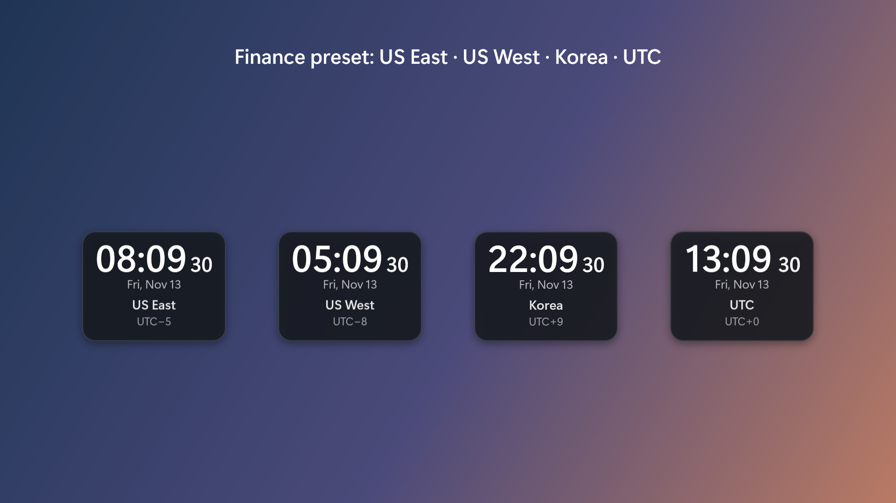
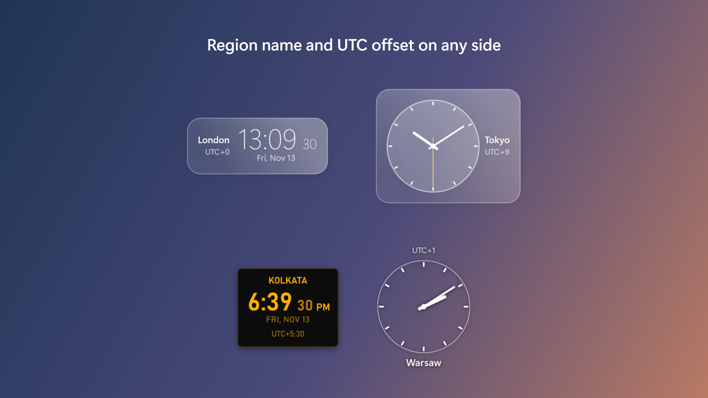
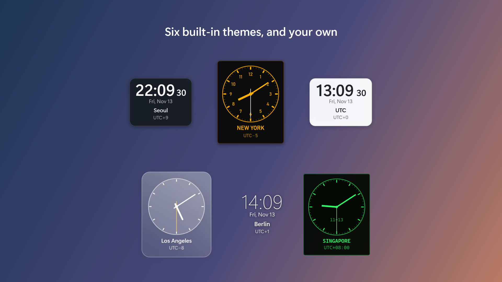

Every time zone you need,
right on your desktop.
필요한 시간대를
바탕 화면 위에 그대로.
World Clock Gadget puts small, good-looking clocks on your Windows desktop. Pick any time zone, choose digital or analog, place the city name and UTC offset where you like, and style every pixel with themes. World Clock Gadget은 Windows 바탕 화면에 작고 깔끔한 시계를 띄웁니다. 시간대를 고르고, 디지털이나 아날로그를 고르고, 지역명과 UTC 표기를 원하는 쪽에 붙이고, 테마로 모양을 끝까지 바꿀 수 있습니다.
One-time purchase (US$0.99 in the US). Windows 10 (2004) or later, Windows 11. 한 번 구매(미국 기준 0.99달러). Windows 10(2004) 이상, Windows 11.

Small clocks, plenty of control작은 시계, 넉넉한 설정
Each clock is its own little window. Drag it anywhere, right-click it for options, Ctrl + mouse wheel to resize. 시계 하나가 작은 창 하나입니다. 끌어서 옮기고, 오른쪽 클릭으로 옵션을 열고, Ctrl + 마우스 휠로 크기를 바꿉니다.
Any time zone모든 시간대
Every time zone Windows knows, searchable by city, country or offset. Daylight saving time is handled for you. Windows가 아는 모든 시간대를 도시, 나라, 오프셋으로 검색해 고릅니다. 서머타임도 알아서 반영합니다.
Digital or analog디지털 또는 아날로그
Per clock. 12 or 24 hours, seconds on or off, date above or below. 시계마다 따로 고릅니다. 12/24시간제, 초 표시, 날짜 위치까지.
Labels on any side라벨은 원하는 쪽에
Put the region name and the UTC offset (UTC+9, UTC−5…) above, below, left or right of each clock, or hide them. 지역명과 UTC 표기(UTC+9, UTC−5…)를 시계마다 위, 아래, 왼쪽, 오른쪽에 붙이거나 숨깁니다.
Always on top, any opacity항상 위, 불투명도 조절
Keep a clock above your other windows, and fade it from 100% down to 20% so it never gets in the way. 다른 창 위에 고정하고, 불투명도를 100%에서 20%까지 낮춰 거슬리지 않게 둘 수 있습니다.
Fully themeable테마로 전부 바꾸기
Six built-in themes. Make your own from the template: colours, gradients, fonts, images, hands and ticks. Changes show up the moment you save. 기본 테마 6종. 템플릿으로 나만의 테마를 만들 수 있습니다. 색, 그라데이션, 글꼴, 이미지, 바늘, 눈금까지. 저장하는 순간 반영됩니다.
Finance preset금융 프리셋
One click opens US East, US West, Korea and UTC side by side. 클릭 한 번으로 미국 동부, 미국 서부, 한국, UTC를 나란히 띄웁니다.
Place the labels where they fit라벨은 어울리는 자리에
A tall column of clocks reads best with names on the left; a row reads best with names underneath. Each clock decides for itself. 세로로 쌓은 시계는 이름이 왼쪽에, 가로로 늘어선 시계는 아래에 있을 때 잘 읽힙니다. 시계마다 따로 정합니다.


Make it yours내 취향대로
A theme is a folder with one theme.json file, plus any images and fonts you want. The template lists every setting with its default, so you start by changing a value, not by reading a manual.
테마는 theme.json 파일 하나와 원하는 이미지, 글꼴을 담은 폴더입니다. 템플릿에 모든 설정이 기본값과 함께 적혀 있어서, 설명서를 읽기보다 값을 바꾸는 것으로 시작하면 됩니다.
Works offline. Collects nothing.오프라인 동작, 수집 없음
The app has no network code. Time zones come from Windows, settings stay on your PC. 앱에 네트워크 기능이 없습니다. 시간대 정보는 Windows에서, 설정은 내 PC에만 있습니다. Privacy policy개인정보 처리방침